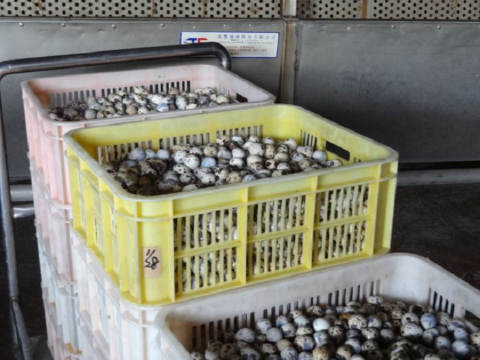
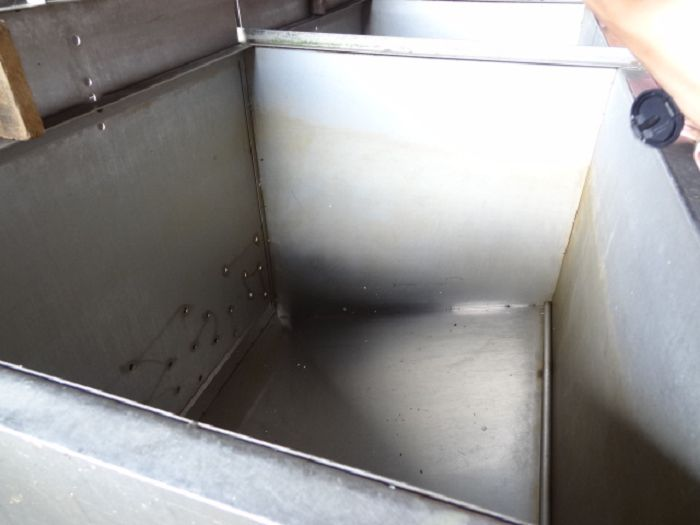
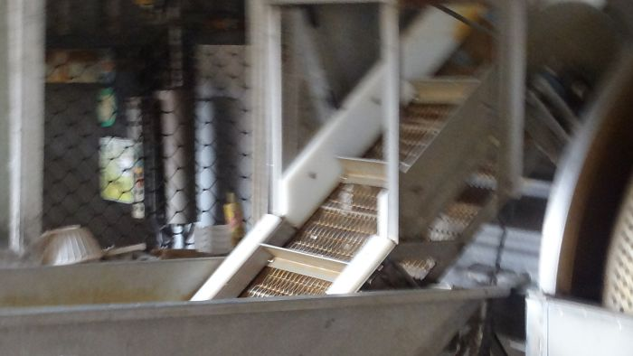
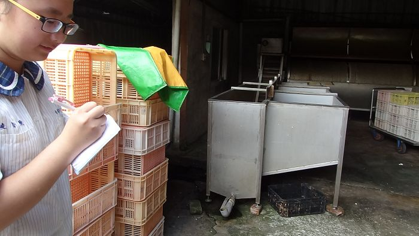

鵪鶉蛋
是一種很好的滋補品，在穎養上有很好的益處，有美膚、補氣益血、強筋壯骨等功效，而且一班人都可以食用，所以就有「卵中之品」的稱號，甚至還有人們說鵪鶉蛋是延年益壽的萬丹妙藥，我想是一點也不誇張。
今天我們這組騎腳踏車來拜訪在線西德興村無人不知，無人不曉得鵪鶉蛋加工廠，雖然我們先前沒有預約，但是工廠裡的阿嬤還是超超超熱情的讓我們進去參觀，因為天氣很熱，阿嬤還請我們喝紅茶，真的是揪甘心的啦~~~阿嬤細心地告訴我們鵪鶉蛋的加工過程........

剛走進就看到好多的鵪鶉蛋 （⊙ｏ⊙）
. 
要先把水放到這個大容器裡煮沸，大約是3分之2滿，等水滾起來就可以把小小的鵪鶉蛋倒進去

等到鵪鶉蛋都浮起來這個機器就會把一顆一顆的蛋運上去
很可惜當天阿嬤沒有在煮蛋，所以沒辦法實際看到煮蛋過程，不過阿嬤說如果要煮蛋的話一定會call我們，不會讓我們錯過的。阿嬤人很好又很熱情，可是很低調，都不讓我們拍照，真的好可惜喔！

↑組員認真的做筆記⊙～⊙
這間工廠就在龍畫坊附近，有空可以去找一找喔~~~
<--回德興村首頁 |